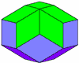
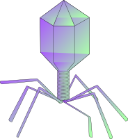
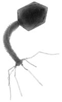
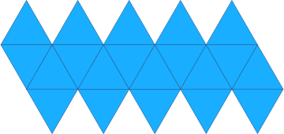
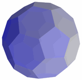

Icosahedron
Notice these interesting things:
- It has 20 Faces
- Each face is an Equilateral Triangle
- It has 30 Edges
- It has 12 Vertices (corner points)
- and at each vertex 5 edges meet
- It is one of the Platonic Solids
Volume and Surface Area
Volume = 5×(3+√5)/12 × (Edge Length)3
Surface Area = 5×√3 × (Edge Length)2
It is called an icosahedron because it is a polyhedron that has 20 faces (from Greek icosa- meaning 20)
When we have more than one icosahedron they are called icosahedra

When we say "icosahedron" we often mean "regular icosahedron" (in other words all faces are the same size and shape), but it doesn't have to be - this is also an icosahedron, even though all faces are not the same.

20-Sided Dice? Yes! An icosahedron that has 20 equal faces has an equal chance of landing on any face.
In fact, you can make fair dice out of all of the Platonic Solids.

The outer shell of this virus (the Human papilloma virus) is like an icosahedron
Courtesy of
VirusWorld at virology.wisc.edu
| The head of a bacteriophage (a virus that targets bacteria) is an icosahedron |  |  | |
| Illustration of bacteriophage | Photo courtesy of Wikpedia user Kuksi |
| Make your own Icosahedron, cut out the shape and glue it together. |
 |

Soccer Ball
A soccer ball is related to an icosahedron:
It is a truncated icosahedron (truncated means it has bits chopped off it)
It has 12 pentagons and 20 hexagons